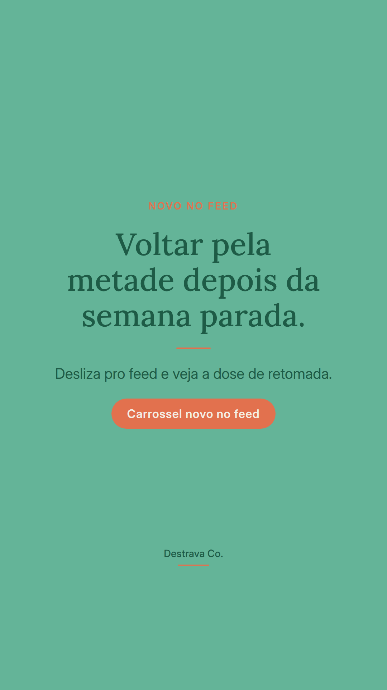
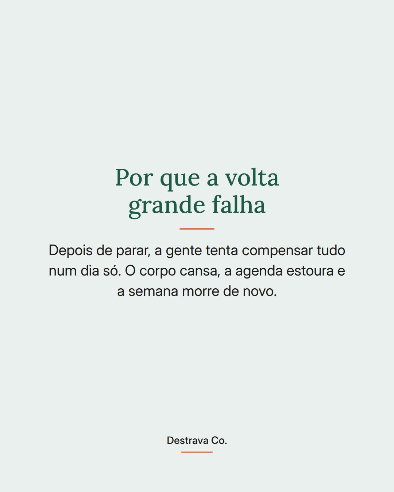
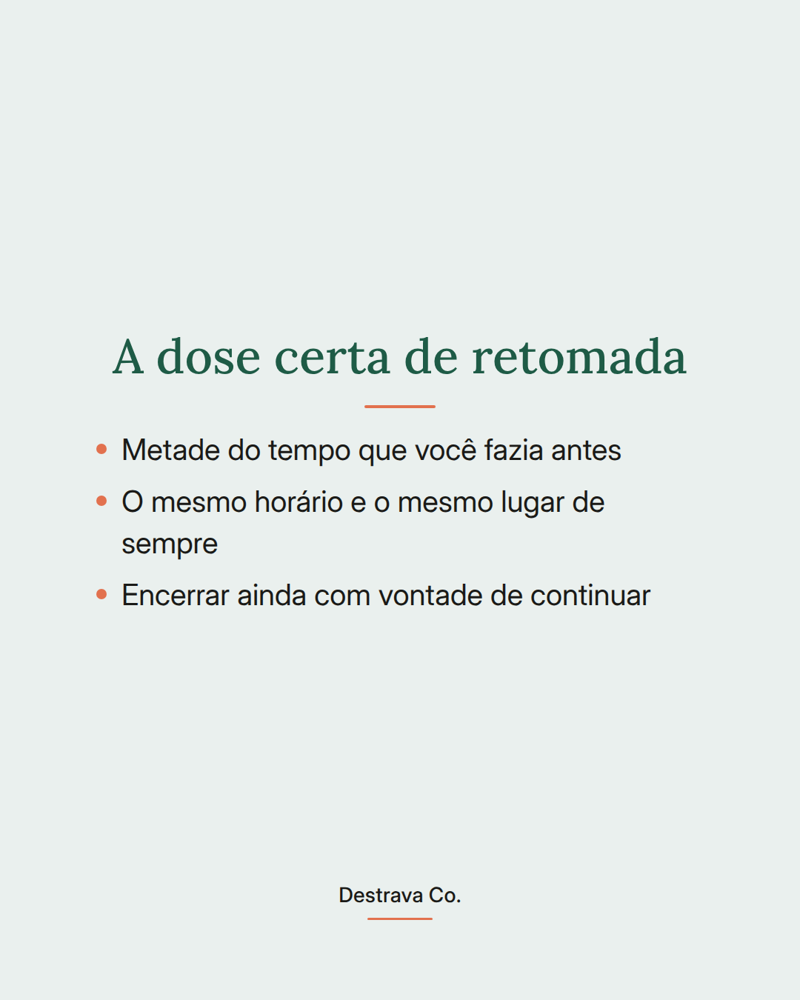
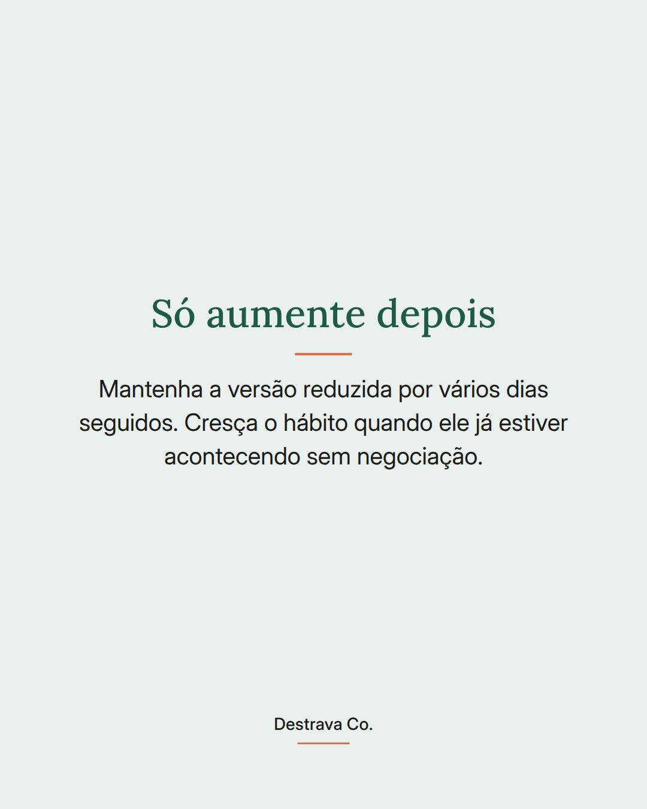

Retomar o hábito depois de uma semana parada funciona melhor pela metade.
A gente costuma achar que precisa compensar os dias perdidos. Aí marca o dobro, cansa logo no primeiro dia e para outra vez.
Faça a versão reduzida: metade do tempo, mesmo horário, mesmo lugar. Termine ainda com vontade de continuar. Aumente só quando o hábito já estiver acontecendo sem negociação.
Salve pra quando a sua semana sair do trilho e mande pra uma amiga que está tentando voltar. No Destrava 21 eu mostro o método D.R.A. em passos curtos pra sustentar a constância.